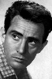
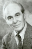

Country:Italy, 125 minutes
Spoken languages:English, Italian
Genres:Crime, Drama
Director(s):Terence Young
Writer(s):Stephen Geller, Peter Maas
Video Codec:Unknown
Number: 2526


Certification:R
Storyline:
When Joe Valachi has a price put on his head by Don Vito Genovese, he must take desperate steps to protect himself while in prison. An unsuccessful attempt to slit his throat puts him over the edge to break the sacred code of silence.
Cast:  


Medium: Original DVD,
Comments: Part of: Tales From The Prison Yard - 6 Film Collection
Loaned: No
Aspect ratio: Unknown